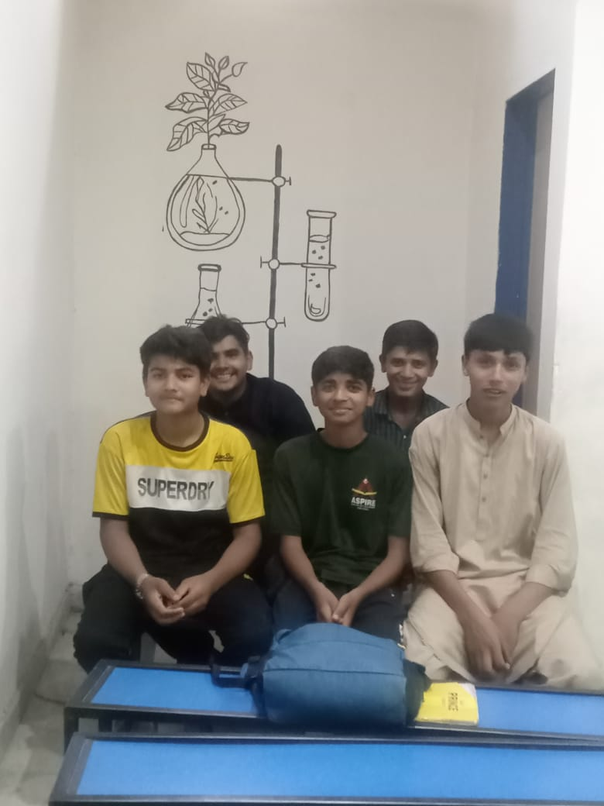
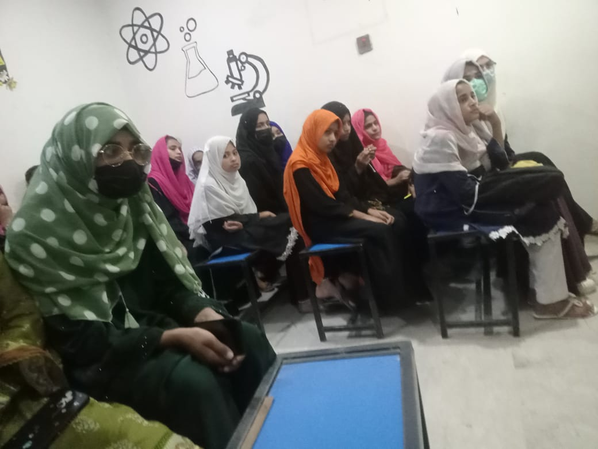
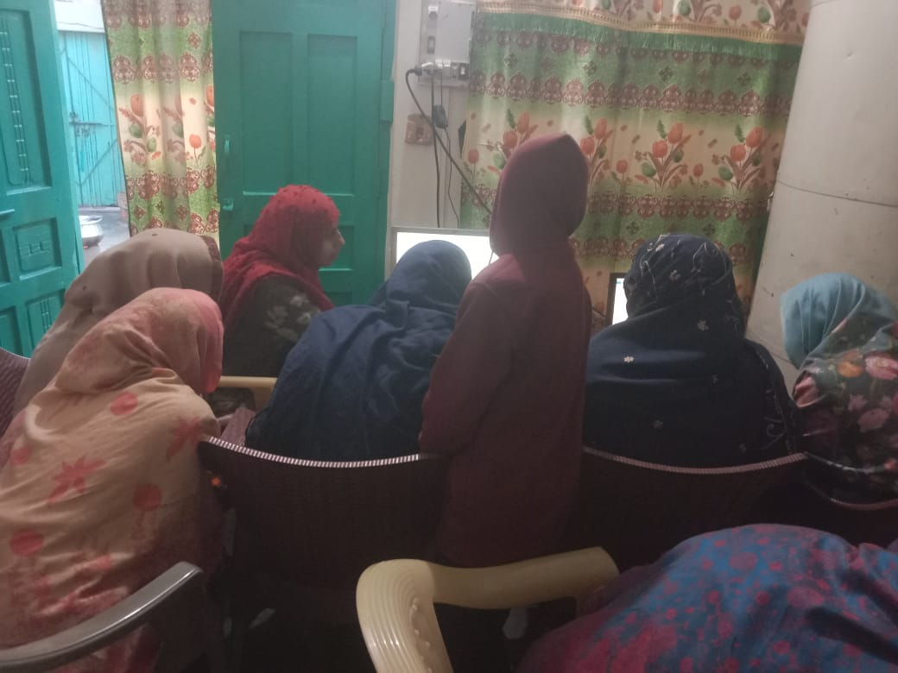
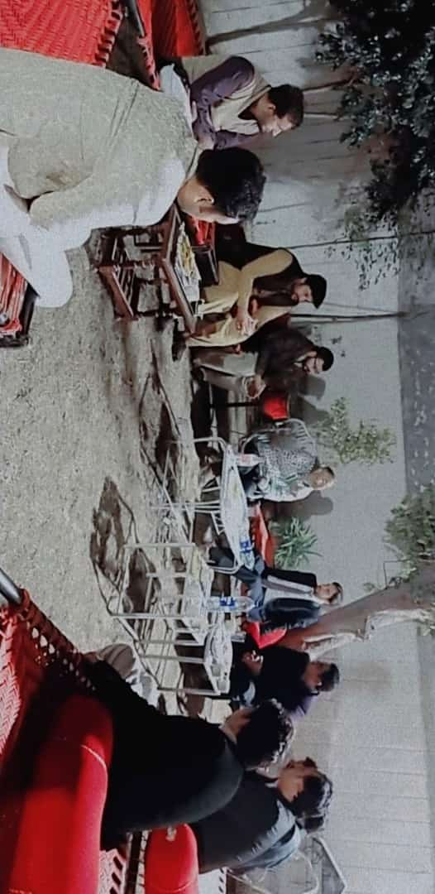

Al Asim wellfare
we are surving to our community in different dimentions.But our main goal against poverty is to work for quality of education in our area . we all know the importance of quality education . So our aim is to do some basic work to improve the quality of education in our educational system espacially in AI and other latest technologies . For this purpuse we are taking these steps (we will welcome any suggession or guidience)




1 : we are consulting with teachers,students and other
relivent personalities continuously.
2 : Inthe light of these conversations we launch a poilot
project in witch we select some students and provide them
computers and teachers to essess capabilities and approch
of our 8th & 9th grade students .
3 : After the success of this project we are spreading it
on large scale till now we are working with schools and
with private spots as well where we are providing guiders
and computers for basic "AI" knowldge and about latest
technologies .
4 : we are organizing workshops for teachers as well.
5 : Awairness in society about letest technologies is the
priority to make a change in society .
we are stil working on ourself to getting ways to
achieve goal .